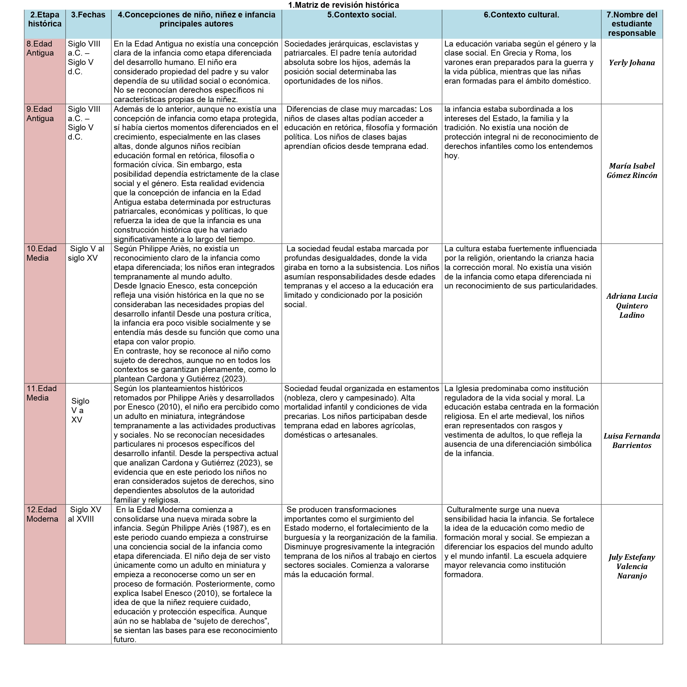

Licenciatura en Educación Inicial
Este espacio digital es una construcción colaborativa que analiza la evolución histórica de las infancias desde una mirada pedagógica. Como futuras docentes reconocemos a niños y niñas como sujetos de derechos, con voz, identidad y capacidad transformadora.
Soy estudiante de Licenciatura en Educación Infantil en la UNAD. Decidí estudiar esta carrera porque creo firmemente en el poder transformador de la educación. Estoy convencida de que acompañar a los niños y niñas en sus procesos de aprendizaje no solo implica enseñar, sino formar seres humanos seguros, autónomos, sensibles y felices.
Soy de Pradera, Valle y actualmente vivo en España. Soy estudiante de la Licenciatura en Educación Infantil y actualmente curso el cuarto semestre. Me apasiona la educación y estoy comprometida con mi formación profesional. En mi tiempo libre disfruto leer y ver películas.
Actualmente curso cuarto semestre de la Licenciatura en Educación Infantil, Zona Centro Sur (ZCSUR).Soy de la ciudad de palmira valle.
Estudiante de cuarto semestre de Licenciatura en Educación Infantil, de San Pedro, Valle. En mis tiempos libres me dedico a mi emprendimiento de papelería y arte. Las experiencias difíciles que viví en mi infancia me motivaron a hacer del aprendizaje un espacio de alegría y confianza, no de miedo ni tristeza. Me apasiona enseñar y acompañar a los niños en sus tareas y en su proceso, ayudándolos a crecer seguros y felices.
soy auxiliar pedagógica en un CDI de la ciudad de Palmira, donde acompaño procesos de atención y formación integral con niños y niñas de poblaciones vulnerables. Actualmente curso cuarto semestre de la Licenciatura en Educación Infantil, fortaleciendo cada día mis conocimientos y habilidades para contribuir al desarrollo, bienestar y aprendizaje significativo en la primera infancia.

La siguiente matriz histórica presenta una síntesis sobre la manera en que la infancia ha sido comprendida en diferentes momentos de la historia.Este análisis permite comprender que la infancia es una construcción social que se transforma según las condiciones históricas y culturales de cada sociedad.
Hablar de infancias significa reconocer que cada niño y niña vive su niñez de manera diferente según su contexto social, cultural y familiar. La infancia no es una etapa única ni universal, sino una construcción social e histórica que ha cambiado a lo largo del tiempo, En el pasado los niños no eran reconocidos como sujetos con características propias, sino que se integraban tempranamente al mundo adulto. Hoy se habla de infancias en plural, ya que las experiencias infantiles están influenciadas por factores sociales, culturales, económicos y territoriales. Esto significa que no todos los niños y niñas viven las mismas oportunidades ni enfrentan las mismas condiciones para ejercer sus derechos. Además, actualmente los niños y niñas son reconocidos como sujetos de derechos; sin embargo, las desigualdades sociales pueden limitar el acceso a la educación, la protección y la participación. Por esta razón, es fundamental analizar las infancias desde una mirada crítica y consciente de la diversidad. Como futuras docentes, esta reflexión nos invita a promover una educación más inclusiva, respetuosa y contextualizada, que reconozca las diferentes realidades de los niños y niñas y fortalezca sus derechos, su participación y su desarrollo integral.
(Se desarrollará en el Escenario 3)
(Se desarrollará en el Escenario 4)
(Se desarrollará en el Escenario 5)